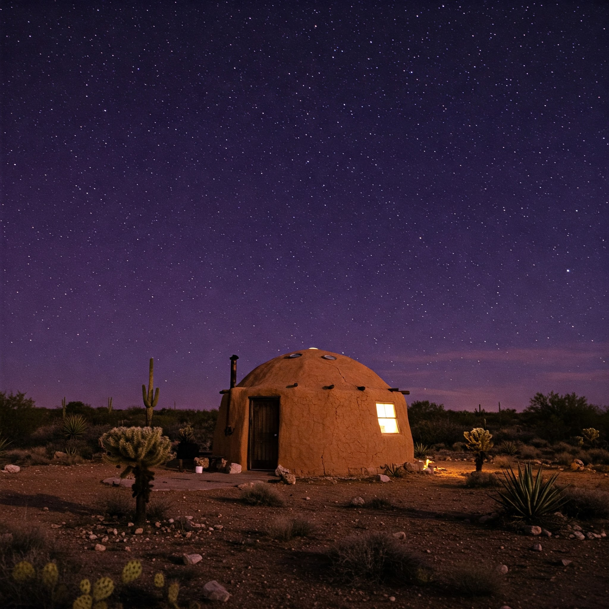
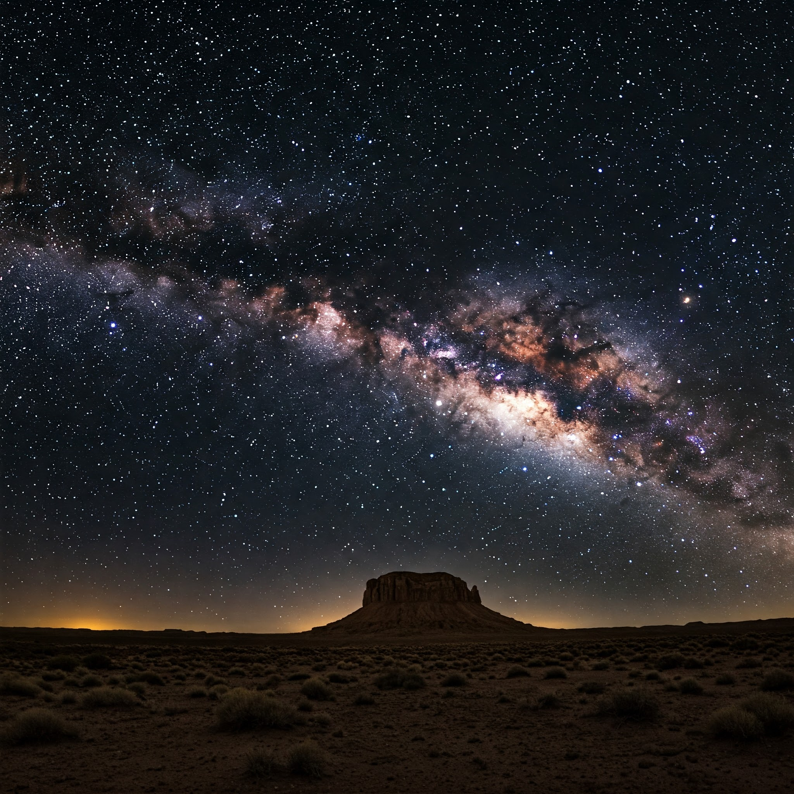
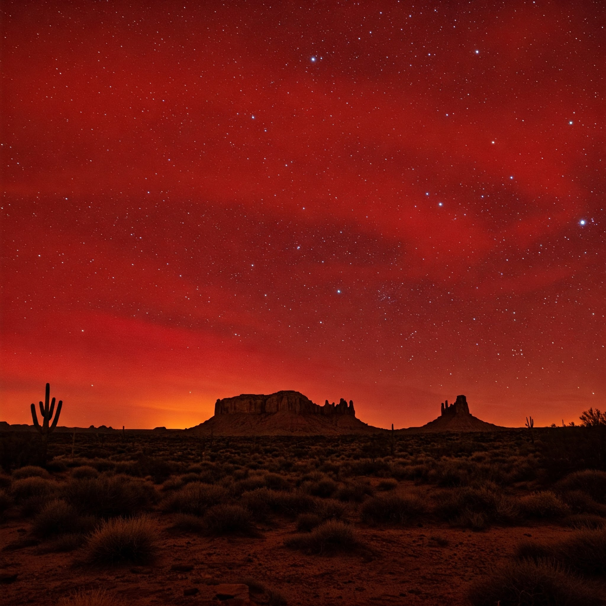
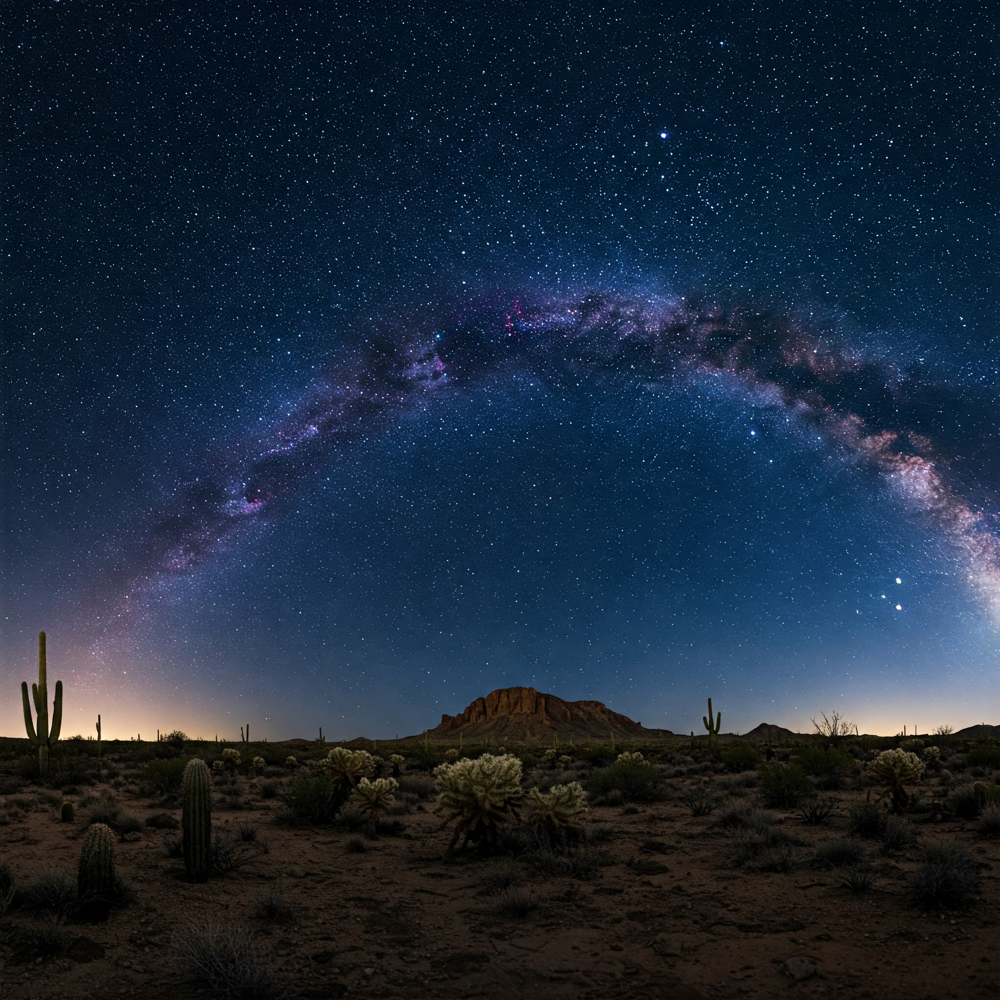
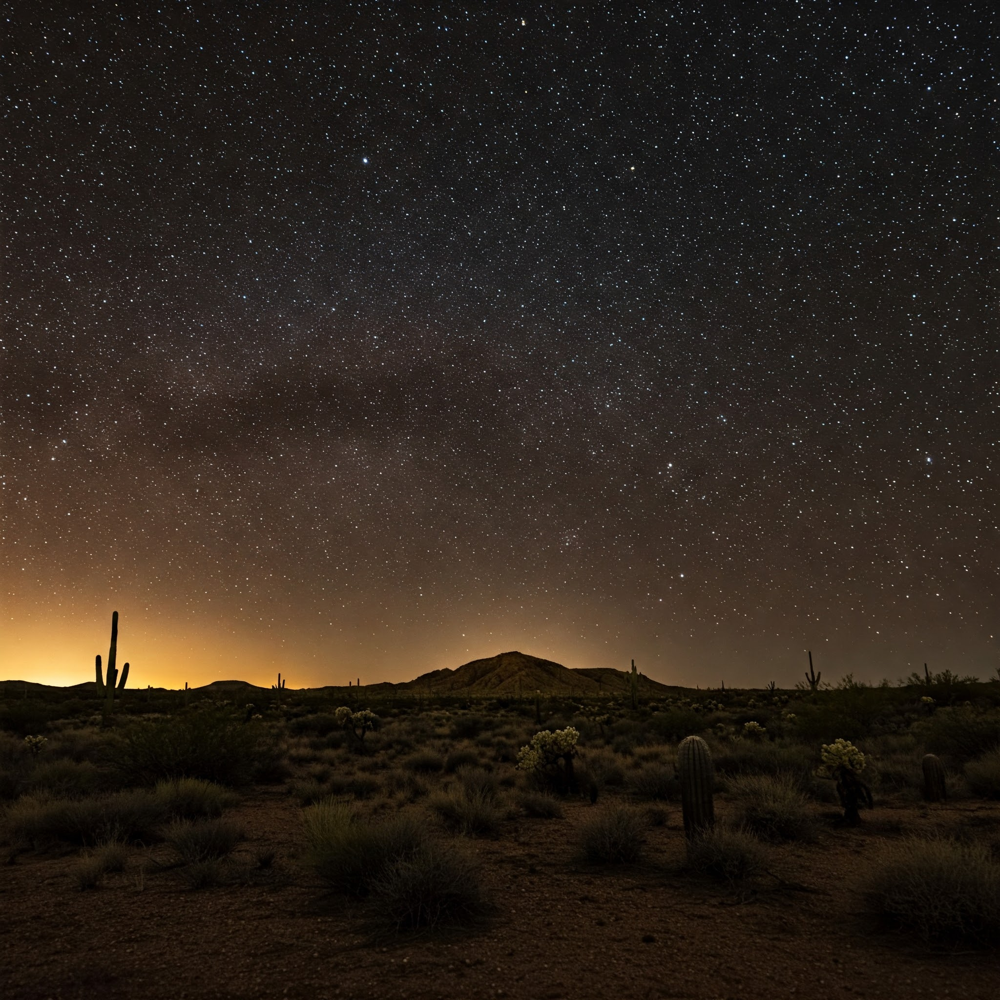
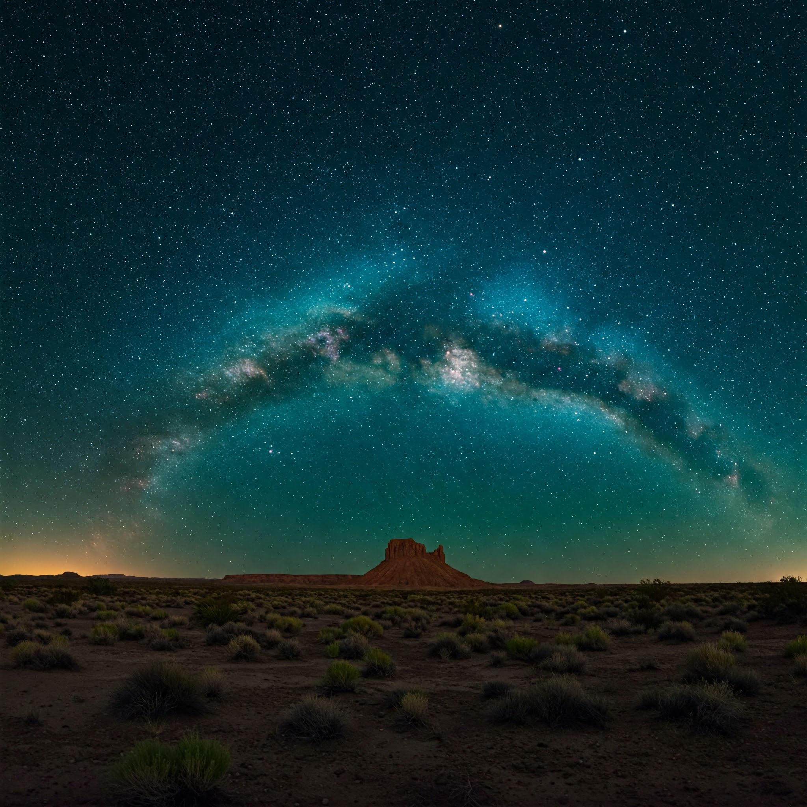
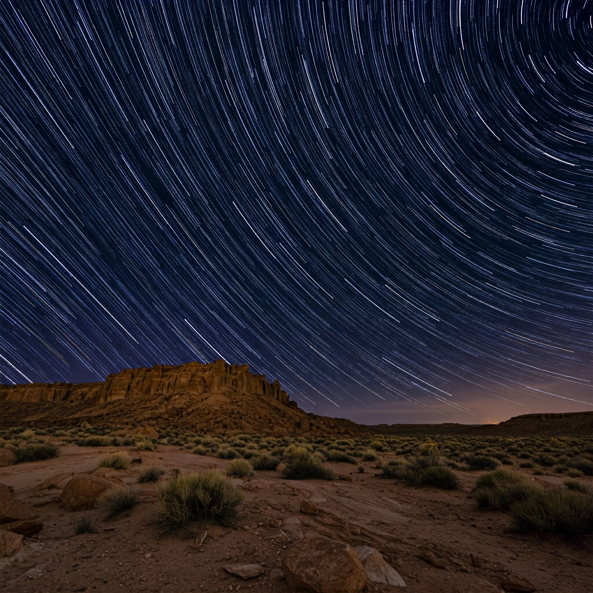
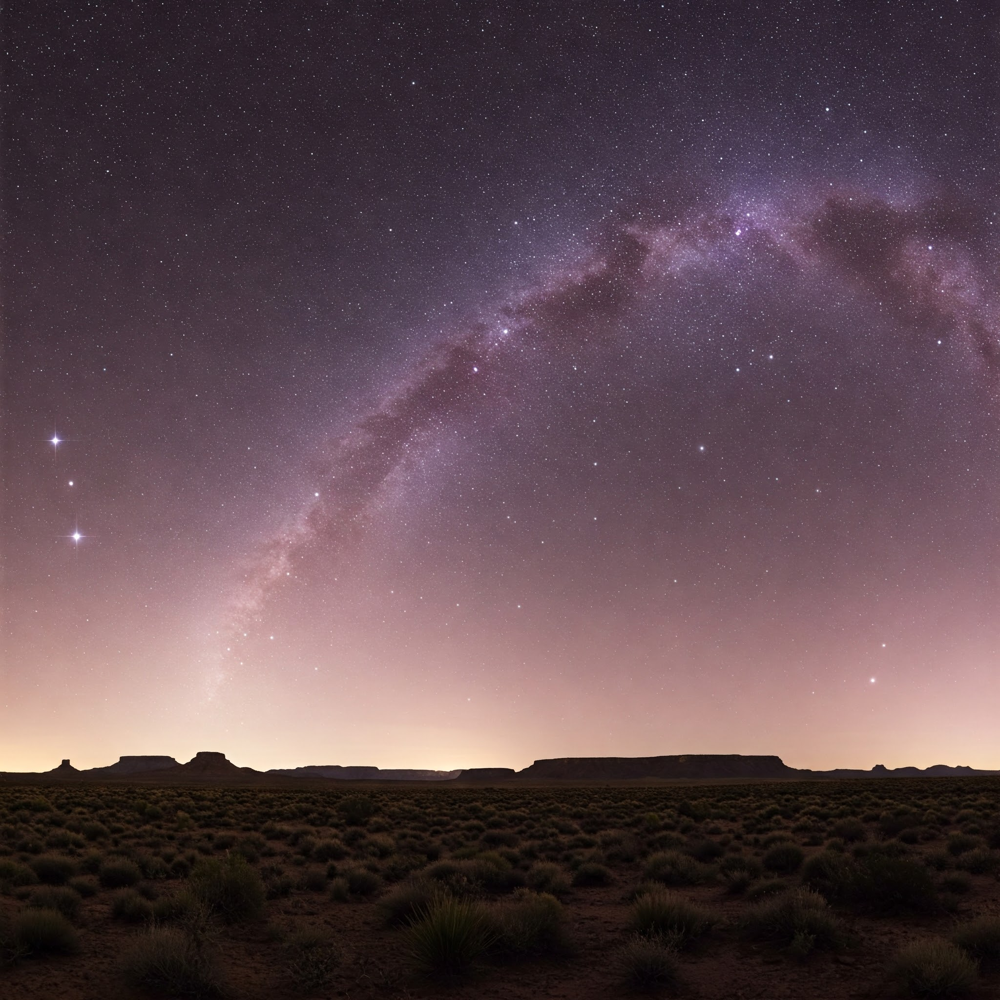

 Under the vast Texas sky, the stars of Big Bend meet the cosmic beauty of a vibrant purple and blue nebula. From the Summit Stargazing Camp, the celestial display feels closer than ever, inviting awe and wonder. It’s a breathtaking reminder of how small we are in the grand expanse of the universe.
 Above the rugged beauty of Terlingua Ranch, a milky rainbow stretches across the night sky, casting an ethereal glow. The Soltero section, bathed in this otherworldly light, feels like a quiet oasis in the vast desert. It's a rare and magical moment, where the colors of the universe seem to dance just above the earth.
 Above the quiet landscape of Agua Fria, a Martian red sky casts an otherworldly glow, while countless small, bright stars twinkle across the heavens. The stillness of the desert below contrasts with the vast, cosmic display above, creating a surreal and awe-inspiring scene. It’s as if the sky itself is alive, reaching out to connect the earth with the stars.
 Above the field of Bluebonnets in the Big Bend Valley, a perfect arching nebula paints the night sky with vibrant hues. The delicate flowers below seem to reach up toward the cosmic masterpiece, creating a serene blend of earth and space. In this quiet moment, nature and the universe unite in a breathtaking spectacle of color and wonder.
 Beneath a sky full of countless stars, the night comes alive with the glow of distant galaxies and constellations. In the foreground, a club member's truck stands ready, equipped with a bright spotlight and scope, guiding the way to the best stargazing spots. It’s a moment of connection—between friends, the earth, and the vast universe above.
 A brilliant blue and green nebula arches gracefully over a mesa in the West Texas desert, its shimmering hues blending together in a cosmic dance. The glowing gases swirl in intricate patterns, casting a soft, ethereal light across the rugged landscape below. The contrast of the nebula's vibrant colors against the dark, silent desert creates a breathtaking sight, as if the very sky itself is alive with color and motion.
 Above the Pecos Mesa at Terlingua Ranch, the deep blue night sky is alive with the illusion of falling stars, captured through long exposure photography. The stars appear to streak across the heavens, their trails glowing in vibrant arcs, as the camera records their movement over time. This celestial display creates a surreal effect, where the stars seem to race across the sky, while the desert below remains still and untouched.
A mesmerizing purple and pink nebula stretches across the night sky above the Big Pine section of Terlingua Ranch, its vibrant colors swirling in cosmic beauty. A handful of bright stars punctuate the nebula’s glow, their steady light piercing through the ethereal mist like distant beacons. The vastness of the universe feels close, as the nebula's soft hues contrast against the stark, quiet desert below, creating a peaceful yet awe-inspiring scene.